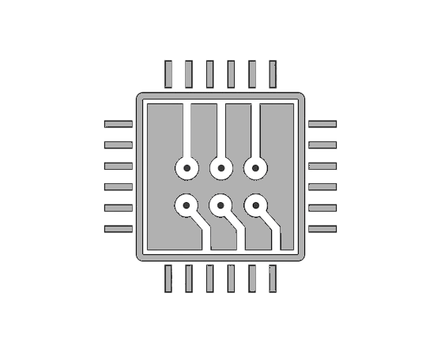

Equipe
Notre équipe est constituée de quatre étudiants et se distingue par la complémentarité de nos expertises.
Nous avons chacun un domaine de prédilection fort, essentiel au projet robotique : (informatique bas niveau, modélisation 3D, gestion des puissances électriques, stratégie, ...).
Bien qu'ayant des domaines favoris, nous travaillons aussi sur les autres parties du robot. Cette collaboration transversale nous permet non seulement de développer de nouvelles compétences au-delà de notre spécialité initiale, mais aussi d'assurer une meilleure compréhension globale du système et de garantir la continuité du projet.
L'aspect novateur de notre démarche est également un atout majeur. Notre école n'ayant pas participé aux précédentes éditions de la Coupe de France de Robotique, nous avons l'opportunité (et le défi !) de commencer intégralement à partir de zéro.
Cette situation nous offre une grande liberté créative sur la direction technique à emprunter, mais elle exige surtout une autonomie et une proactivité totales dans la recherche de solutions et le choix des technologies. Nous sommes donc en charge de l'intégralité du cycle de développement, de la définition de l'architecture générale à l'implémentation finale, renforçant ainsi notre capacité à structurer et à mener un projet ambitieux sans dépendre de l'expérience passée.
